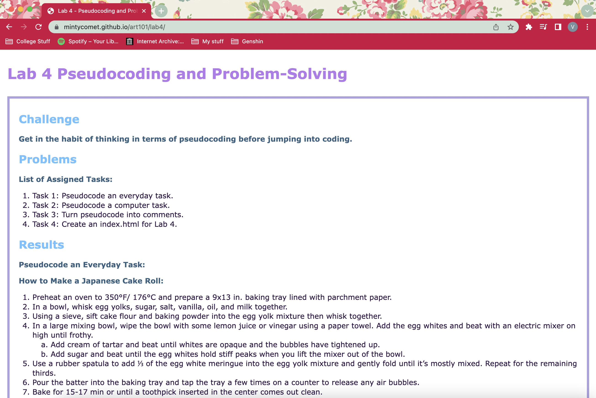

Challenge
Get in the habit of thinking in terms of pseudocoding before jumping into coding.
Problems
List of Assigned Tasks:
- Task 1: Pseudocode an everyday task.
- Task 2: Pseudocode a computer task.
- Task 3: Turn pseudocode into comments.
- Task 4: Create an index.html for Lab 4.
Results
Pseudocode an Everyday Task:
How to Make a Japanese Cake Roll:
- Preheat an oven to 350°F/ 176°C and prepare a 9x13 in. baking tray lined with parchment paper.
- In a bowl, whisk egg yolks, sugar, salt, vanilla, oil, and milk together.
- Using a sieve, sift cake flour and baking powder into the egg yolk mixture then whisk together.
- In a large mixing bowl, wipe the bowl with some lemon juice or vinegar using a paper towel. Add the egg whites and beat with an electric mixer on high until frothy.
- Add cream of tartar and beat until whites are opaque and the bubbles have tightened up.
- Add sugar and beat until the egg whites hold stiff peaks when you lift the mixer out of the bowl.
- Use a rubber spatula to add ⅓ of the egg white meringue into the egg yolk mixture and gently fold until it’s mostly mixed. Repeat for the remaining thirds.
- Pour the batter into the baking tray and tap the tray a few times on a counter to release any air bubbles.
- Bake for 15-17 min or until a toothpick inserted in the center comes out clean.
- After taking the cake out of the oven, quickly flip it over onto a slightly damp kitchen towel or another piece of parchment paper that is larger than the cake.
- Peel off the parchment paper and roll the cake slowly starting from the short side of the cake. Allow cake to cool completely while it’s rolled up.
- To make the whipped cream, use an electric mixer with the whisk attachment to mix together heavy cream, sugar, and vanilla extract until medium to stiff peaks form.
- After the cake has cooled, unroll and trim the edges.
- Spread whipped cream and add fruits or anything else on top if desired.
- Gently roll cake back up without the towel/paper.
- Wrap the cake with plastic wrap and chill it in the fridge for 1 hour. It can be served after this.
Pseudocode a Computer Task:
Searching for a book on a library website:
- Prompt user to input whether they are searching by title or author.
- Display a drop down select box.
- Display text telling the user to select from the two options.
- Prompt user to type in their search text.
- Display a text box for input.
- Display text telling the user to type their search.
- Accept user input.
- Read the option selected from the drop down menu.
- Read the text inputted by the user in the text box.
- Compare the input text to the library lists of the type selected.
- Evaluate whether the user chose author or title.
- Check if any text in the library’s data matches the text inputted by the user.
- Check if any information partially matches the user input.
- Sort resulting information for display.
- Organize information results from closest matches to partial matches.
- Sort data into a vertically listed format.
- Display information or that it is not found.
- If there was one or more exact matches for the search, display the organized list.
- If there was no exact match, display a message saying so and also the partially matching results.
Turn Pseudocode into Comments:
// Prompt user to input whether they are searching by title or author.
// Display a drop down select box.
// Display text telling the user to select from the two options.
// Prompt user to type in their search text.
// Display a text box for input.
// Display text telling the user to type their search.
// Accept user input.
// Read the option selected from the drop down menu.
// Read the text inputted by the user in the text box.
// Compare the input text to the library lists of the type selected.
// Evaluate whether the user chose author or title.
// Check if any text in the library’s data matches the text inputted by the user.
// Check if any information partially matches the user input.
// Sort resulting information for display.
// Organize information results from closest matches to partial matches.
// Sort data into a vertically listed format.
// Display information or that it is not found.
// If there was one or more exact matches for the search, display the organized list.
// If there was no exact match, display a message saying so and also the partially matching results.
The resulting page once the code is published:
